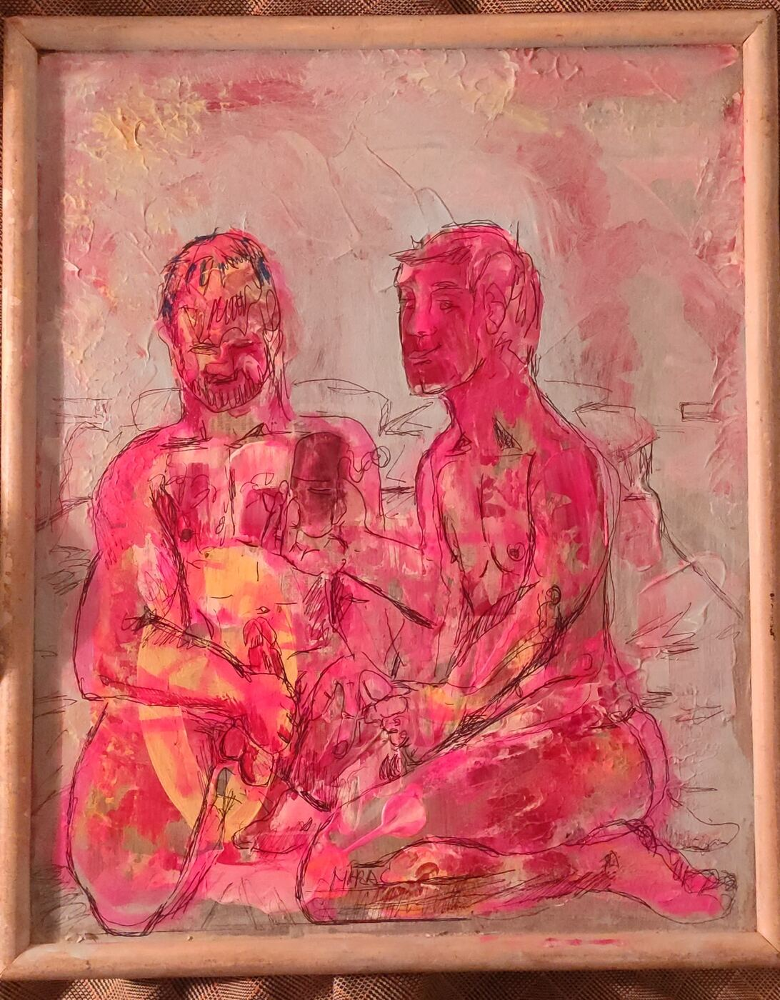

Barcelona · de madrugada
Pintura
Escultura
Dibujo digital
Performance
Pedazos de vida llenos de música y reflejos: los amigos, la noche, los cuerpos y los bares que cierran a las 3.
03:00 a.m.

En directo
Performances, procesos y dibujos que nacen con el dedo sobre el móvil.


La obra





Exposiciones y acciones
- yo · tú · nosotros · ellas Inusual Project, Barcelona · Colectiva
- Mutabilidad Sala Freedonia, Barcelona · Performance
- Testimoni del conflicte Poble Vell, Corbera d’Ebre · Colectiva
- Miras al otro lado Barcelona · Taller propio
«Ocaña en tránsito», 320 cm de grafito tallado, y el taller Miras al otro lado, donde imparte pintura, dibujo y escultura.
Hasta
la próxima
Encargos, compra de obra, talleres y colaboraciones.
Escribir por WhatsApp [EMAIL] Instagram [@USUARIO]© 2026 David Mirás · BarcelonaAviso legal · Privacidad